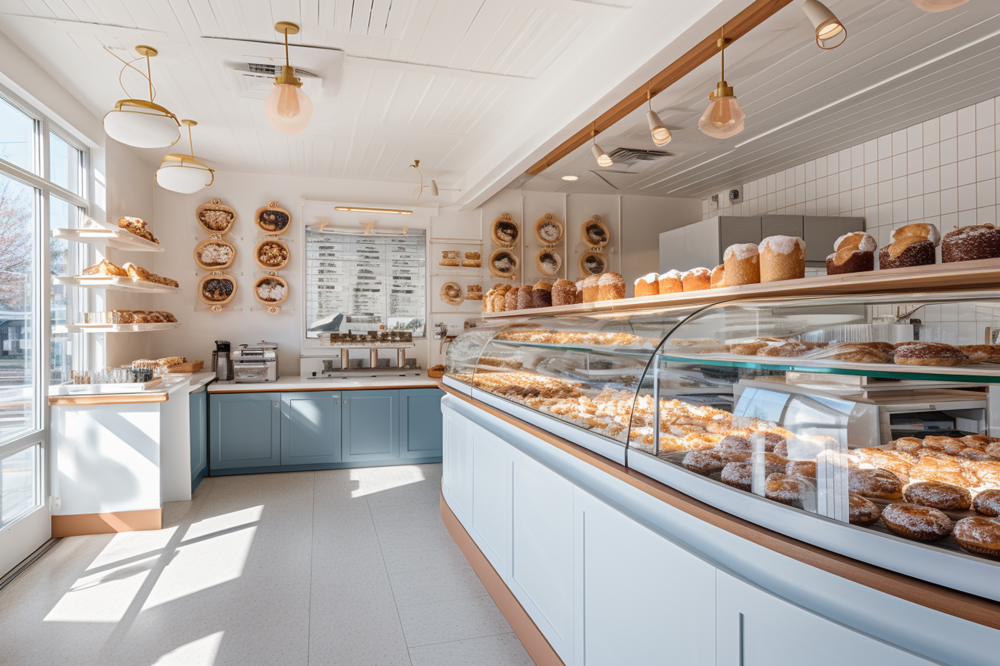

Made with Love
Every item is handcrafted individually. We pour genuine care into each recipe, each layer, and each decoration, no shortcuts, ever.
A Cape Town bakery born from passion, built on community, and dedicated to crafting moments of pure joy-one handmade treat at a time.

Who We Are
Chelly's Signature Treats was founded in 2022 right here in Cape Town — a city we love deeply and a community we are proud to serve. What started as a passion project baking for friends and family has grown into a beloved local bakery known for its moist, handcrafted cakes and beautifully curated sweet treat boxes.
Our "Signature" philosophy means no two orders are rushed and no detail is overlooked. From the moment you open one of our treat boxes — adorned with our signature ribbon and designed with care — to the first bite of a perfectly layered cake, you will feel the love that goes into every creation.
We are more than a bakery. We are a family-friendly space where celebrations begin, where gifts are made meaningful, and where every customer is treated like a guest in our home.
Our Purpose
"Crafting luxurious cakes and sweet treats using local ingredients, and creating moments of joy by delivering handcrafted treats made with love to the community."
"To become Cape Town's most loved and recommended bakery, maintaining excellent quality and service while expanding our presence across South Africa."
What Drives Us
Every item is handcrafted individually. We pour genuine care into each recipe, each layer, and each decoration, no shortcuts, ever.
We support Cape Town suppliers and use locally sourced ingredients wherever possible, keeping quality high and community first.
Our "Signature" standard means attention to detail in every creation - from the crumb structure of a cake to the ribbon on a gift box.
Chelly's is for everyone. Families, individuals, event planners - all are welcome in our warm, aesthetic, family-friendly environment.
What We Offer
Birthdays, weddings, baby showers, whatever the occasion, we design and bake a bespoke cake tailored to your theme, flavours, and vision. Consultations available on request.
Feed a crowd with our curated party platters featuring a selection of cupcakes, brownies, cookies, and mini treats. Perfect for corporate events, kids' parties, and family gatherings.
Order from our website and choose convenient home delivery across Cape Town or in-store pickup. All orders are carefully packaged to arrive in perfect condition.
Send a thoughtful surprise with our Signature Treat Boxes beautifully packaged selections of our finest baked goods, ideal for gifting or sending love from afar.
Earn points with every purchase and unlock discounts, free treats, and exclusive member perks. Our loyal customers are our most cherished community.
Use our gifting feature to send treats directly to a loved one — enter their details, pick their treats, add a personal message, and we take care of the rest.